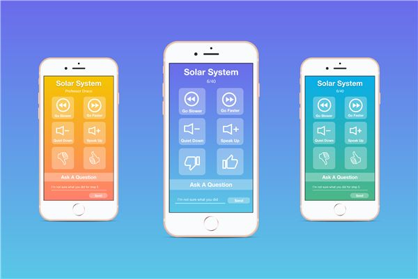
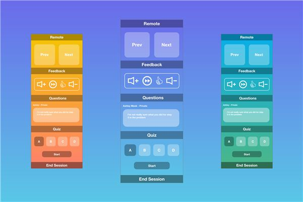

Software Development Engineer at AWS IoT, building the AWS IoT Core console. I’ve worked on its frontend since October 2021, mostly in TypeScript and React.
The phone shows what’s being said and where sounds come from; the wearable turns them into touch. The code splits into speech-to-text, a sound classifier, a direction finder and a server that ties them together.

Gradian
PennApps 2018 · Winner, Best Education Hack
Anonymous questions, live feedback and in-class quizzes.
Students rate a lecture’s volume and pace from a phone app while professors run warm-up questions with a built-in clicker. The web app gives students a live transcript, then a summary of key points and further reading when the lecture ends.

React, React Native, Redux, Firebase, Python and the Google Web Speech API. With Jeane Carlos, Ali Afzal and Aram Baghdassarian.
IBM Vault Challenge
2018 · Winner, top 2% of 3,000+
Six levels of ciphers, hidden site code and passwords.
A cup rides the belt past four stations: boba mix drops in, a coffee pot adds hot water, tapioca pearls fall in, and a stirrer drops for you to mix. A Python script starts the run over USB, an Arduino Uno drives the motors, and a Wemo smart plug switches the coffee pot on.
Arduino and Python. With Ali Mohamad and Diane Tran.
Minerva
Software Engineering term project, Rutgers
Quizzes, questions and feedback on top of existing learning management systems.
The repository is the mobile half of the system: a React Native app built with Expo that shares a MongoDB database with the web half through the MongoDB Stitch API.
LiveNote
HackPrinceton 2017
Classmates’ lecture notes merged into one document in real time.
Everyone types their own notes and LiveNote builds a master copy from all of them; the more you add or fix, the more of the master you can see. Azure’s Linguistics API splits sentences into phrases, our own algorithm merges them back, and Socket.io hands each person a part of the master to edit.
Node.js, Express, Socket.io, MySQL, Quill and Azure. With Kelvin Liu and Ezra Ablaza.
More of my code is on GitHub and more hackathon projects on Devpost.
Skills
Frontend
TypeScript, React (Gradian, Minerva), HTML and CSS (this site, by hand), Node (LiveNote)
AWS
IoT Core, CloudWatch, S3, Lambda, CDK
For fun
Photography and Lightroom, cooking, rating food
Explore
Off the clock: where I eat, where I hike, what I photograph and what I’m listening to.